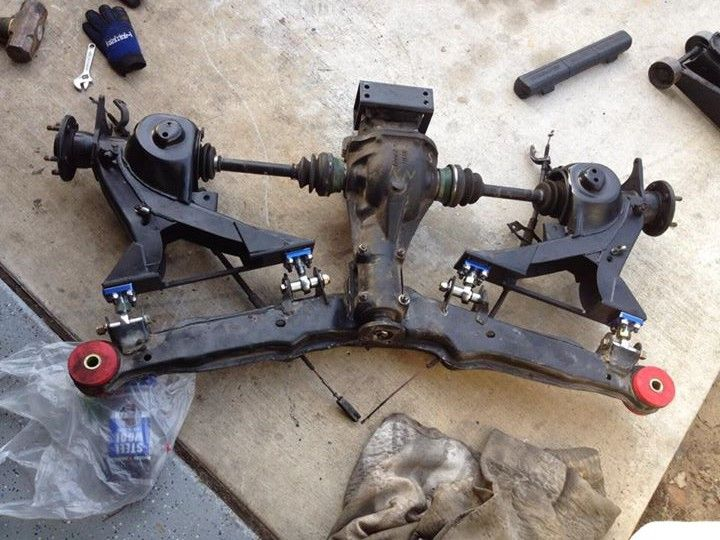

-
In for updates!!
This is exactly what I had in mind for fixing these issues.
Any chance of being able to add a rubber boot/sock over the heim joint to prolong joint life?
1986 300ZX Turbo…sold
1990 Skyline GT-R…new money pit
2014 Juke Nismo RS 6-speed…daily -
Shouldn't need to? You can mist them with light oil occasionally, but the injected nylon race doesn't need lube, and the body is quite rust resistant being cromoly (cromoly bonds well to surface treatments like zinc or nitriding)
That said, you can buy the generic rubber boot kits from any rodend place, part code is generally RERS-xx and will have several sizes -- I personally think it's a great way to trap moisture, sooo… -
-
Any feedback yet?
What's the price for this?
Is this a cut/weld DIY or is there a fee for sending in the arms to you to be cut/welded?
I don't have a welder or means of making a jig to do it correctly, reason I am asking.
1986 300ZX Turbo…sold
1990 Skyline GT-R…new money pit
2014 Juke Nismo RS 6-speed…daily -
Satan is a big boy. He will figure out what to reinforce LOLOriginally posted by floridaZMy Build Thread -
I am personally not providing a welding service, crossing borders with heavy shipments would make this totally outrageous, however if Andrew Gardner is up to it, he can do the east coast, I know Omron has a place in Cali that can do it…Originally posted by NissanEgg
There's no jig required, assuming you can cut straight, you only have to make a lateral measurement for where you'd like to center, mainly because V1 can change your track width if you chose toOriginally posted by NissanEgg
Of course I know all the instructions, but I just have too much stuff to do to finish making an install guide that covers every aspect -
My welder doesn't really want to deal with shipping but I wouldn't mind bringing your arms to him if you ship them to me. Just make sure you clean the hell out of them or they will get sent right back to you lol.
Dont give up, build your dream Z -
As long as that information gets circulated and incorporated into later revisions…Feedback- viewtopic.php?f=18&t=19840

-
FYI my car is on the ground with everything installed. I cant comment on the ride yet since I'm waiting for brake lines to arrive. I'll let you know how static camber looks once I see it in the daytime, but this is only the "middle" setting of camber reduction and I'm probably sitting at around -2. At this same ride height with stock arms, I was sitting at -5.2 for reference. I'd say up to 5 degrees of camber adjustment can be achieved.

Dont give up, build your dream Z -
So update from the horse's mouth:
I've more or less completed a proper manual for the V1 kit, details everything from installation to alignment afterwards, just waiting on feedback from more early adopters to see if I covered everything adequately.
In a side note, I'm going to see about including an adjuster wrench for the turnbuckles, I whipped up a design that requires lasercutting and bending, which would be nice, though the manufacturer might balk… so it's by no means final.
taw22tb.jpg
Meanwhile I'm also looking into producing gussets for the inboard end, again I'll have to see what my cutting crew have to say…
inner-gusset.jpg -
Hurry up early installers!!! I want to know how these work out!!! I want some badly…
1986 300ZX Turbo…sold
1990 Skyline GT-R…new money pit
2014 Juke Nismo RS 6-speed…daily -
I just put all new poly in the RCA's and now I'm going to tear it all out once you offer these up. I ain't even mad. The pressure is on, get these things out!1985 300zx N/A - June 4 2012 Sold to Austin Irwin
1987 2+0 N/A - March 19 2014
1987 2+0 Turbo - May 6 2014 -
Thanks guys… ETA 2 more weeks -
I got pics of one of the converted s12 arms… notice they retained the hardlines
trailing arm jesse.jpg -
Ohhhh it must be getting close. Any more feedback from the testies?1985 300zx N/A - June 4 2012 Sold to Austin Irwin
1987 2+0 N/A - March 19 2014
1987 2+0 Turbo - May 6 2014

Copyright © 2006–. All rights reserved. Privacy Policy